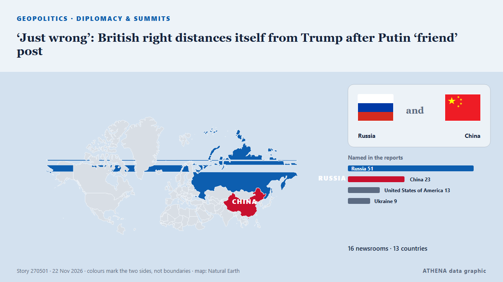

‘Just wrong’: British right distances itself from Trump after Putin ‘friend’ post

Reform deputy leader calls Russian leader ‘a murderous dictator’ after US president appears to endorse him UK politics live – latest updates Reform UK and the Conservatives have distanced themselves… de The Guardian
Ce qui a changé 3 nouveaux reportages de 3 médias ces 24 dernières heures.
Voir les sources ›Preuves: Correctes
Relayé de façon indépendante par 16 médias dans 13 pays depuis le 19 nov. ; premier à l'annoncer : Al Jazeera English ; la couverture est à son pic. ATHENA juge le risque élevé (7.1/10), surtout en raison de la gravité des dommages décrits et de sa portée géographique et sectorielle. La confiance est de 92 % (élevée) : 16 médias indépendants le confirment, avec une fiabilité moyenne des sources de 76 %. Médias par pays : Ukraine (3), États-Unis (2), Qatar (1). Couverture : du 19 nov. au 22 nov., 75 heures.
Pourquoi c'est important: L'invasion à grande échelle de l'Ukraine par la Russie a commencé en février 2022. Ce suivi couvre les combats, les frappes sur les infrastructures et la diplomatie autour de la guerre, selon la presse du monde entier.
Ce qui a changé : 3 nouveaux articles de 3 rédactions dans les 24 heures jusqu'au 22 nov..
Premier titre : Presidents Xi, Trump, Putin commit to global stability, denuclearisation
AutomatiséSélectionné, regroupé et noté selon la méthode publiée d'ATHENA à partir de 16 médias indépendants. Le titre est celui du média ; les phrases d'ATHENA suivent des modèles fixes - aucune IA générative ne les rédige. Comment ça marche →
Comment lire cette page
- Ce que vous lisez
- 16 médias dans 13 pays ont rapporté cet événement. Les reportages ci-dessous sont classés selon leur ordre de parution ; chaque titre ouvre l'article original. ATHENA n'écrit aucun reportage.
- Notre lecture
- Pour mémoire — Les reportages décrivent une affaire terminée, intérieure, commerciale ou personnelle. Nous la consignons pour que vous voyiez qui l'a rapportée et quand. Nous ne suivons pas ici de risque de conflit plus large.
- Quelle base de preuves
- Correcte Plusieurs médias indépendants concordent, mais le tableau peut encore changer.
Après retrait des doublons, des éléments hors sujet et périmés, 15 des 16 reportages listés sont retenus ; 100 % des titres correspondent à l'événement.
- Ce que cela ne veut pas dire
- ATHENA mesure la façon dont un événement est rapporté, pas sa véracité. Ce n'est ni une prévision, ni un jugement sur qui a raison, ni un conseil.
- Ce qui la changerait
- Des reportages d'autres médias indépendants montrant une évolution différente, ou une confirmation ou un démenti ferme d'une source officielle.
Lecture R2 · actualisée à chaque mise à jour de cette page. ATHENA n'a pas encore publié de bilan de ces lectures ; il sera lié ici le moment venu.
En un coup d'œil
Sélectionné, noté et rédigé par la méthodologie publiée d'ATHENA. Aucun rédacteur n'intervient sur un événement en particulier. Comment il est produit ›
| 19 Nov 11:22 UTC | 1 |
|---|---|
| 19 Nov 14:22 UTC | 0 |
| 19 Nov 17:22 UTC | 1 |
| 19 Nov 20:22 UTC | 0 |
| 19 Nov 23:22 UTC | 1 |
| 20 Nov 02:22 UTC | 1 |
| 20 Nov 05:22 UTC | 1 |
| 20 Nov 08:22 UTC | 1 |
| 20 Nov 11:22 UTC | 2 |
| 20 Nov 14:22 UTC | 1 |
| 20 Nov 17:22 UTC | 3 |
| 20 Nov 20:22 UTC | 0 |
| 20 Nov 23:22 UTC | 0 |
| 21 Nov 02:22 UTC | 0 |
| 21 Nov 05:22 UTC | 0 |
| 21 Nov 08:22 UTC | 1 |
| 21 Nov 11:22 UTC | 0 |
| 21 Nov 14:22 UTC | 0 |
| 21 Nov 17:22 UTC | 0 |
| 21 Nov 20:22 UTC | 0 |
| 21 Nov 23:22 UTC | 0 |
| 22 Nov 02:22 UTC | 0 |
| 22 Nov 05:22 UTC | 0 |
| 22 Nov 08:22 UTC | 1 |
| 22 Nov 11:22 UTC | 1 |
| 22 Nov 14:22 UTC | 1 |
| 19 Nov 23:27 UTC | 0.0 |
|---|---|
| 20 Nov 05:17 UTC | 2.2 |
| 20 Nov 16:03 UTC | 3.7 |
| 20 Nov 20:04 UTC | 4.5 |
| 20 Nov 21:23 UTC | 6.3 |
| 22 Nov 14:48 UTC | 7.1 |
| 22 Nov 14:48 UTC | 7.1 |
Pourquoi ces chiffres
Importance
L'ampleur et la visibilité de la couverture de l'information.
Risque
Ce que décrivent les reportages, noté selon le dommage possible. Ce n'est pas une prévision.
Confiance
Dans quelle mesure des médias indépendants étayent l'information.
La couverture : qui l'a annoncé, et quand
titre tel que publié · ouvre l'original- Al Jazeera English · QatarPutin says US-China-Russia can strengthen global stability
- News Agency of Nigeria · NigeriaPresidents Xi, Trump, Putin commit to global stability, denuclearisation
- CBS News (World) · États-UnisTrump calls Putin his friend at summit, prompting backlash from some world leaders
- Ukrinform (English) · UkraineRepublicans in Congress criticize Trump’s meeting with Xi and Putin
- Cyprus Mail · ChypreTrump gets the grand welcome but little else from Xi and Putin
- Free Malaysia Today · MalaisieAs Trump courts Xi and Putin, middle powers make their own moves
- The Globe and Mail · CanadaAs Trump courts Xi and Putin, middle powers make their own moves
- Colombia One · ColombieTrump, Putin and Xi Seek UN Overhaul and End to International Justice System
- Fox News (World) · États-UnisPutin launches Ukraine barrage hours after Trump meeting amid alleged Russian missile breach of NATO airspace
- Arab News · Arabie saouditeTrump says Putin ‘expressed his desire’ for end of Ukraine war
- APA (English) · AzerbaïdjanTrump: Putin clearly expressed desire to end war in Ukraine through diplomacy
- Ukrainska Pravda (English) · UkraineTrump says Putin is "having a hard time because he's in a war that should have lasted one day"
- Korea Herald · Corée du SudTrump says 'confronting dangers on Korean Peninsula' discussed at 3-way summit with Xi, Putin
- Kyiv Post · UkrainePutin, Xi and Trump Meet: The Upshot?
- The Guardian · Royaume-Uni‘Just wrong’: British right distances itself from Trump after Putin ‘friend’ post
- France 24 English · FranceThe week in pictures: Xi hosts Trump and Putin, COP31 and new French protests